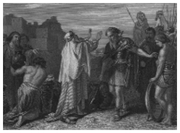

1. BÖLÜM: GİRİŞ “EHYEH ASHER EHYEH”
“Ve Allah Musaya dedi BEN, BEN OLANIM;...” [Çıkış 3:14]
Horeb dağında, tükenmeden yanan çalı ateşinin ortasından kendisine seslenen ve ona görevini bildiren Rab’ba (Tanrı), Musa “Senin adını sorarlarsa onlara ne söyleyeceğim?” diye sorduğunda Allah Musaya; “BEN, BEN OLANIM; İsrail oğullarına böyle diyeceksin; Beni size BEN’im gönderdi.” diye yanıt verir ve yapması gerekenleri anlatır. Bu yanıtta çok ilgi çekici bir yan vardır. Tanrı, Musa’nın beklediği gibi kendisini tanıtacak ama aynı zamanda da sınırlayacak belirli bir ad vermemiş, her türlü belirlemeyi aşan ancak buna karşın kendisinden başka hiçbir şeyi belirlemeyen ve anlatmayan dolayısı ile kendisi ile karşılaştıracak hiç bir şeye de yer vermeyen, benzersizliğini ve sonsuzluğunu anlatmıştır.
Tek tanrılı ve kitaplı dinlerden ilki olan Yahudiliğin kutsal kitabı Tevrat, sıradan bir gözle okunduğunda, okuyana verdiği tarihsel bilginin ve seslendiği topluma getirdiği bir takım yaptırımların dışında, çelişkili, mantık hatalarıyla dolu bir metin gibi gelir. Yahudi tarihinin en eski zamanlarından beri, bir çok din bilgini, bu çelişki ve mantık hataları ile dolu metnin, ardında ya da altında saklı, gizemli bir mesaj olması gerektiğini düşünerek üzerinde çalışmalar yapmışlardır. Bu çalışmaların bir kısmı akılsal olurken daha çok kısmı, mistik dediğimiz, içe dönük, özel ritüeller içeren içrek çalışmalar olmuştur. Tevrat üzerine çalışmaların çoğunluğunun içrek olmasının en önemli nedeni, X. Yüzyıla kadar, hiçbir İbrani eserinde sesli harf kullanımının olmayışıdır.
Bu, Yahudi yazı dilinin, Intention (Niyet-Amaç dili) olması, dolayısı ile sadece sessiz harflerden oluşan sözcüklerin, kendisinden önce ve sonra gelen sözcükler bağlamında yoruma açık anlamlar kazanması demektir. Yani aynı harflerle yazılmış sözcüklerin, cümlenin gelişine bağlı olarak farklı anlamlarla yorumlanması olanaklıdır. Örneğin; HRM harflerinden hem Haram, Harem, Hiram, Harîm, Hurma ve hem de İhram, v.s anlamları çıkarılabilir.

Abram (Hz. İbrahim)’in “Doğruluk Kralı” olarak bilinen Salem (Kudüs)
Kralı Melkisedek tarafından kutsanması (inisiye edilmesi)
Tevrat ile ilgili içsel çalışmalar sonucunda, önceleri ağızdan kulağa söylenen ve daha sonraları yazıya geçen bilgileri toplayan ve oldukça doyurucu açıklamalar içeren metinlerin toplamı, KABALA dediğimiz çalışmanın özünü oluşturmaktadır. Kitabın ilerleyen bölümlerinde, Kabala’ya kaynak oluşturan metinler hakkında daha ayrıntılı bilgiler verilmeye çalışılacaktır.
Geleneğe göre, Kabala İ.Ö. 1800’lerde Kudüs’de, Abram (Hz. İbrahim)’in “Doğruluk Kralı” olarak bilinen Salem (Kudüs) Kralı Melkisedek tarafından kutsanması (inisiye edilmesi) ile başlamıştır. [Tekvin14.18]. Bu durumda mistisizmin, anılan tarihten çok daha önceleri, M.Ö. 12. yy.da Sina dağında Tevrat’ın verilmesinden de önce başlamış olduğu anlaşılıyor.
Bazı Kabalistler, Kabala’nın ilk insana, ilk günahından sonra, yaratılıştaki soyluluğuna ve mutluluğuna yeniden kavuşmasına yardımcı olması için melekler aracılığıyla cennetten indirildiğini kabul ederler. Diğer ibrani yasa koyucuları ise, gizli Kabala bilgilerinin, 40 gün boyunca Sina dağında kalan Musa’ya, doğrudan dogruya, Tanrı tarafından verildiğini öne sürerler. Bu kurama göre; Musa da kutsal ruhun bu ödülünü, paylaşmak üzere 70 yaşlı bilgeye iletir. Onlar da kelime kelime ve ağızdan kulağa kendilerinden sonrakilere geçirirler. Peygamber Ezra’ya kadar böyle gelen gelenek, Ezra başkanlığında, yasa (Tevrat) ile birlikte yazıya geçirilir.
Bazı Kabalistler de bu görüşten biraz daha farklı olan bir görüşü benimserler, şöyle ki; Kabala, Tevrat ile aynı zamanda verilmiş, Tevrat topluma yönelik olduğu halde, Kabala birkaç seçilmiş azize açıklanmıştır. Bunlar da onu, geleneğe göre, küçük bir mistik gruba aktarmışlardır. Abraham ile süren (sözel) geleneğe Mısırlı bir rahip olan Musa eski Mısırın tüm eski ve gizli sırlarını eklemiştir.
Kabala, İkinci Tapınak da yıkıldıktan sonra (M.S 66), sadece hahamlar ve Yahudi mistikler tarafından sürdürülürken 8. yy.da Güney İtalya’da Biçimlerin-Oluşmanın-Kurulmanın kitabı (Sefer Yezirah) ile ilk kez, bu dar ve kapalı çevre dışında da duyulmaya başlanmıştır. Bu kitapta, Tanrıya vecd yoluyla ulaşılabileceği ve bunun yöntemleri, Tanrısal dünyanın mistik yapısı ve bu yapının içsel ilişkileri incelenmekteydi. Daha sonra 13. yy.da İspanyada İhtişamın- Parlaklığın-Aydınlığın Kitabı (Sefer ha Zohar) [ki aynı zamanda “Merkava” olarak da bilinir] adı ile bir kitap yayılmaya başladı. Bu kitap, M.S. 136 yılında ölen Rabbi Akiba
, Shimon ben Yoahi, Rabbi Simeon ve öğrencileri arasındaki, gizli bilimlerin, Tanrı-Evren ve bilim üzerine metafizik teorilerin incelendiği konuşmaları içermekteydi. Kitapta önerilen yöntemler bazı Kabalist gruplar tarafından, değişik biçimlerde günümüzde de halen uygulanmaktadır.
Her şeye karşın, Kabalanın kaynağı ve ilk uygulayıcılarının kimler olduğu, kesin olarak bilinmemektedir. Ağırlıklı ve en çok kabul gören görüş, ilk uygulamalarının, II. Mabet (M.Ö 515) dönemindeki hahamlara kadar indirilebileceğidir.
Kabala’nın kökeni ile ilgili bir başka görüş, bu uygulamanın M.S. I. yüz yılda Filistin’de ortaya çıkan “Merkava” (ya da Merkabah) gizemciliği ile başladığı hakkındadır. Merkava gizemciliğinin belli başlı metodu, Eski Ahit’te peygamber Ezekiel’in rüyette gördüğü ve RABBİN oradan kendisi ile söyleştiği “ilâhî taht” ya da “araba” (merkava) ile ilgili derin düşüncelere dalmak ve bu düşüncelerin yoğunlaşmasıyla çoşku içinde kendinden geçmektir. VII. ve XII. yüz yıllar arasında çalışma alanı Filistin’den Babilonya’ya kayan ve başka Gnostik akımların da etkisi altında kalan Merkava gizemciliğinde ilk aşama, Tanrı’nın tahtını ve Tanrısal düzeni düşleyebilmektir. Öğretmenler tarafından öğretilen ve çok uzun çalışmalarla başarılabilen bu ilk aşama aşılabildiğinde, çoşku içindeki ruhun yükselişi başlar. Bu ruhsal yükseliş boyunca yapılan tehlikeli yolculukta, farklı yeteneklerle donanmış düşman meleklerle dolu “yedi küre” ya da “yedi gök katının” aşılması beklenmektedir. Ruhun bu yolculuktaki amacı, aşılan “yedi küre”den sonra, merkava’nın üzerinde bulunan ilâhî tahta ulaşmaktır. “Tzenu’im” adı verilen Merkava uygulayıcıları, geleneğe kabul edilmeden önce istekliler arasından özenle seçilirlerdi ve bunların özel ahlâk niteliklerine sahip olmaları istenirdi. Bu seçkin kişilerin eğitim boyunca sürekli olarak egolarını kontrol etmeleri ve sürekli oruç tutarak kendilerini gizemci deneyimlere hazır tutmaları gerekliydi. Bu seçkinlerin yapacağı başarılı bir düşsel yolculuk için her şeyden çok “mühür” olarak tanımlanan bazı sihirli sözlerin ve formüllerin bilinmesi gerekiyordu ki bu sözler, yapılan uzun ve yorucu çalışmalar sonrasında kazanılıyordu. Bu sihirli sözler, her bir gök katının kapısında bekçilik yapan meleklerden geçiş izni için gerekliydi. Hatalı bir “mühür” kullanımı, çok tehlikeli yaralanmalara, hattâ korkunç ölümlere yol açabilirdi. Talmud’da yazılan öykülerden birine göre, Merkava uygulamasına kalkışan dört kişi arasından biri ölmüş, diğeri delirmiş, öteki dinden çıkmış ve yalnızca Rabbi Akiba ben Joseph gerçek bir düşsel deneyimi sonuçlandırabilmiştir.
Merkava uygulayıcıları kimi zaman “Doğaüstü Dünyanın Gezginleri” olarak da adlandırılırlardı. Bu gizemci akımın en eski iki yazılı kaynağı; Rabbi Akiba’ya ait olduğu sanılan “Küçük” ve Rabbi Ishmael ben Elisha’ya ait olduğu sanılan “Büyük” metinlerdir. Ayrıca, “Enoch’un Kitabı” ve Tanrı’nın oldukça abartılı antropomorfik (insan biçimli) betimlemelerini içeren “Shi’ur Qoma” (İlâhî Boyutlar) adındaki metinler de Merkava geleneğine aittirler.
Kabala öğretisinde, bir çok kez mantığın kabul edemeyeceği veya batıl inanç olarak yadsınacak görüşler, savlar ve açıklamalar da sunulur. Oysa başlangıçta kabul edilemeyen bu görüşler, yaşamın ileri evrelerinde, değişen ve gelişen anlayışla pek güzel benimsenebilir ve uygulanabilir. İşte bu görüşler, sadece kişisel gelişme ve evrimle elde edilebildiğinden, gerektiğinde öğreti dışından olanlara da anlatılabilir ama ne yazıkki gerekli alt yapıya sahip olmayanlar tarafından anlaşılamazlar.
Kadim Kabalanın yazılı kaynakları, ilk bakışta uçuk, çelişkili ve anlamsız gelebilecek bir öğreti içermektedir. Ancak bunlar yüksek düzeyde ruhsal öğretilerdir. Öğretinin amacına ulaşabilmek için, bu kaynakları sadece okumak yeterli değildir. Ruhsal değişimleri görebilmek, algılayabilmek için, ruh gözünün açık olması (içtenlikle istekli olmak) gerekmektedir. Eski büyük Kabala bilgeleri, cahil, ham ve tutarsız insanların önüne bilgelik incilerini sermediler, temiz olmayanları, temizlenmeye niyetli olmayanları bilgelik mabedine sokup, kirletmediler. Çünkü, ciddî ve içten istekli öğrencinin, Okultizm’in yüksek yaşam biçimine ulaşabilmesi için azimli bir çaba göstermesi gerekmektedir.
Yaşamı boyunca Tevrat üzerine çok kapsamlı bir çalışma yapan ve geleneksel Kabala metinlerini geliştirerek bir Evren Yaratılış Teorisi haline getiren Rabi İsaac Luria
, Tevrat hakkında şunları söylemektedir:
“Tevrat’ın gövdesi, Tanrı’nın bize buyruklarını, Tevrat’ın ruhu ise, Tanrı’nın evreni nasıl yarattığını açıklar. Tanrı bize, birçok derin yollarla bazı kavrama güçleri vermiştir. O’nun dünyayı yaratma sürecinde hem O’ndan ayrı bir parça olmamızı hem de O’nunla ortak olmamızı ister. Biz davranışlarımızı Tevrat’ın emirleri ile uyumlu bir şekilde yapmalıyız, oysa yaratılış sürecinde, dünyaya ışığını gönderirken, O sadece kendisi ile ortaktır. O ışık, Dünyanın yaratılış yasasındaki normal ışıklardan çok üstündür. O aşkın bir ışıktır, yaratılışın üstünde ve sonsuzdur. Biz o ışığı ancak Tevrat’ın verdiği bilgi ile ama çok az anlayabiliriz.”
Kabala’nın Tevrattan sonra en önemli kaynağı olan Sefer ha Zohar (Görkem kitabı), Tevrata nasıl bakmamız gerektiğini şu şekilde anlatmakta ve bazı örneklerle de bu bilgiyi pekiştirmektedir.
Rabbi Shim’on dedi ki
“kim Tevrat’ın birçok öykü ve sıradan sözcüklerden ibaret olduğunu söylemişse
o insanoğluna yazık!
Eğer öyle olsaydı, biz şimdi de sıradan sözcüklerle onların hepsinden daha iyi bir Tevrat oluşturabilirdik.
(Tanrı) Yücelikler yerine (sadece) Dünya işlerinden mi söz etmektedir?
Oysa Dünya yasalarının bile daha yüce sözcükleri vardır.
Eğer öyleyse, haydi o sözcüklersiz bir Tevrat yapalım.
Ah, ama (ne yazıkki)Tevrat’ın bütün sözcükleri yücedir, yüce gizlerdir.
Gel ve gör:
Üstteki dünyalar ve alttaki dünyalar mükemmel dengededir:
İsrail altta, melekler üsttedir.
Meleklerin yazdığı:
‘O ki ruhları, melekleri yapar’
[Mezmurlar 104:4]
Ama melekler dünyaya indiğinde, bu dünyanın giysilerini giydiler.
Onlar bu dünyaya uygun giysileri giymediklerinde,
Bu dünyaya dayanamazlardı,
Ve dünya da onlara dayanamazdı,
Bu nedenle bu Tevrat öyküsü (de)Tevrat’ın giysisidir.
Her kim düşünürse ki gerçek Tevrat giysidir
Ve başka bir şey değildir,
(Tevrat) O’nun ruhunu söndürür!
(Bu düşünceyle) gelen, (Tevrat’ın) başka bir parçasına sahip olamayacaktır.
Davud şu sözleri niçin söyledi:
‘Gözlerimi aç ki Tevrat’ındaki şaşılacak şeyleri göreyim!
[Mezmurlar 119:18]
Tevrat’ın giysilerinin (dış görünüşü) altında ne vardır!
Gel ve gör:
Orada da tümüyle giysi görülebilir.
Bazı ahmaklar güzel görünüşlü bazı giysileri gördüğünde.
Daha dikkatle bakarlar.
Ama giysinin özü beden;
Bedenin özü ise ruh’tur.
Bu yüzden (onlar) Tevratta beraberdirler.
O’nun bir bedeni vardır:
(o da)Tevrat’ın emirleri(dir),
‘Tevratın somut hali’ olarak adlandırılır.
Bu beden, giysiler giyinmiştir:
(o giysiler ise) Bu dünyanın öyküleridir.
Dünyanın budalaları, Tevrat öykülerinde sadece giysiye bakarlar;
Daha fazlasını bilemezler.
Giysilerin altında ne olduğuna bakmazlar.
Ama giysiye bakmak yerine,
giysinin altındaki bedene bakanlar daha çok bilirler.
Yüksekteki Kralın hizmetçilerinden bilge birileri,
Ki onlar Sina dağında oturuyorlardı,
Sadece ruha, bütünün köküne, gerçek Tevrata bakıyorlardı!
Onların yazgısı,
Zamanı geldiğinde,Tevrat rulosunun ruhuna bakmaktı!
Gel ve gör:
Bu yüzden O üsttedir.
Giysi ve beden ve ruh ve ruhun ruhu vardır.
Cennetler ve onların ev sahipleri giysilerdir.
İsrailin komünyonu (katılımı) ise bedendir.
Ruhu kim aldıysa, İsrailin Güzelliğidir.
Bu yüzden o ruhun bedenidir.
Ve bu ruh, İsrailin Güzelliğidir,
Ki o gerçek Tevrattır.
Ruhun ruhu, Kutsal Kadim Bir’dir.
Bütün hepsi, bu bir olan bir’e bağlanmıştır.
Kim Tevrat sadece bir öyküdür derse,
O kötü ruhlu olana ızdırap vardır.
Onlar daha ötesine bakmazlar da giysiye bakarlar.
Mutluluk ise, Tevrat’a gerektiği gibi bakana,
Dürüst olanadır.
Şarap nasıl kavanozda durursa,
Tevrat da giyside öyle durmalıdır.
Giysinin altında ne olduğuna, bunu düşünerek bak!
—-Bütün sözcüklere ve öykülere—-
Onlar giysilerdir!”
[3:152a]
Kral, bir buyruk tasarlamıştı ve
Onu yüksekteki parlaklığa kazıyarak yazmıştı.
Saklının saklısının içinde
Sonsuz gizemden,
Göz kamaştıran bir kıvılcım çakmıştı.
(O kıvılcım) Tanımsız olanın içindeki buhar salkımından
Bir çembere yerleşti
Beyaz değildi, siyah değildi, kırmızı değildi, yeşil değildi,
Hiçbir renkte değildi.
Bir şerit haline geldiğinde, ışıyan bir renk kazandı,
Kıvılcımın derinliğinden, fışkırarak aktı
Altına renkleri aşılayarak,
Sonsuz gizemin, saklı olanın saklısı,
Bu Akış boydan boya yarıldı ama onun halesi bozulmadı.
Bütün bunlar asla bilinemedi.
Boydan boya yarılmanın etkisiyle,
Yüce ve saklı bir nokta, parladı.
İşte O noktanın ötesinde hiçbir şey bilinemez.
Böylece ona Başlangıç adı verildi,
Bütün bunlar ilk buyrukdu.
“Aydınlanan, gökyüzünün zohar’’ı gibi parlayacak,
ve onlar ki doğru yolda olanlar
sonsuza kadar ve her zaman parlayacaklar”
[Daniel 12:3]
Zohar, Saklının saklısı, onun aurası yayıldı.
Ve O aura bu noktaya dokunur dokunmaz.
Yaratılış başladı
Ve kendine, şanı ve övgüsü için bir saray yaptı.
İşte orada da kutsallığın tohumu ekildi.
Doğum, Evrenin hayrı için verildi.
Bu bir sırdır:
“Onun bağ kütüğü kutsal tohumdur”
[İşaya 6:13]
Zohar, tohumu onun şanı için ekti
İnce mor ipek tohumu gibi.
İpekböceğinin kendi çevresine koza örmesi gibi kendi sarayını yaptı.
Bu saray övgü ve herşeyin yararınadır.
Başlangıçla,
Saklı olan Bir ki bilinmeyen sarayı yapandır.
Bu Saray Elohim diye adlandırılır.
İşte bu da sırdır:
“Başlangıçta gökleri ve yeri Elohim yarattı.”
[Genesis 1:1]
[1:15a]
Yukarıdaki Zohar alıntılarından da anlaşılacağı gibi Kabala, her şeyden önce bir simge bilimdir, bir yaşam biçimidir, bir anlayıştır, Tanrıya ulaşmanın bitmeyen yoludur ve en önemlisi de bir Evren yaratılış teorisidir.
Kabala, aynı zamanda Tanrı ve hakikatin dünyasını akılla anlamanın ve deneyimlemenin dünyasıdır. Bu nedenle Kabalacılar çağlar boyunca, dâima hakikatin içsel boyutuyla ilgilenmişlerdir.
Bilindiği gibi iç deney ile kazanılan bilgiler, sözcüklerle yeterince anlatılamayacağı için bütün ezoterik okullar, semboller ve alegorilerle çalışırlar. Kabala eğitiminde de bu böyledir. Örneğin; Kitabı mukaddeste anlatılan, Jakop (Yakup) ailesinin Mısır’a inişi öz’ün insan haline dönüşünü anlatır. Musa’nın mısırlıyı öldürüşü, onun bitki ve hayvan evrelerindeki durumunu anlatır. Musa’nın Jethro (kayınpederi ve ruhsal öğretmeni) ile karşılaşması, yere saplanmış safir çubuğu çıkartması, Jethro’nun kızıyla evlenmesi gibi aşamalar da sembolik olarak öğretiye kabulünü (initiatory) ve ruhsal öğretideki ilerlemelerini anlatmaktadır. Musa, Jethro’nun yanında gördüğü uzun eğitim sürecinde içgüdü ve dürtülerine egemen olmayı öğrenmiştir, Yanan çalı hikayesi de eğitimdeki başarısının sonucunda kazandığı lütuf’dur.
Kabalistik gruplar, genellikle disiplinli bir düzen içinde ve sözel geleneklere uygun olarak çalışırlar. Bu gruplar, dünyanın çeşitli yerlerinde halen çalışmalarını sürdürmektedirler. Onları bulmak kolay ama aralarına katılmak çok zordur. Kabala, kapılarını sadece onu almaya hazırlananlara açar. Kabala klâsiğinden uyarlanmış bir efsane olan Zohar, bu noktayı sembolik olarak şöyle açıklar;
“Genç bir adam, önünden geçmekte olduğu Saray’ın bir penceresinde peçeli bir genç kız figürü görür. Önceleri sadece merak ettiği için, her gün aynı saatlerde aynı pencereye bakarak genç kızı daha iyi görmeye çalışır. Bir süre sonra, umduğu gibi onun dikkatini çekmeyi başarabildiğini ve onun da kendisine bakmaya başladığını fark eder. Daha sonra onunla ilişki kurmak ister, bu arada kız peçesini indirir ve yüzünü açar. Bu işaret, genç adamın daha da ilgisini çeker ve onun güzelliğini görmek için zamanının büyük bir bölümünü sarayın önünde geçirmeye başlar. Artık kıza aşık olmuştur ve sarayın önünden ayrılamamaktadır. Bir süre sonra kız, ona karşı olan ilgisini daha çok açık eder ve bir gün konuşmaya başlarlar. Kız ona sarayın sırlarını ve babası olan Kral’ın özelliklerini anlatır. Günler geçtikçe genç adam bu özleme daha fazla dayanamayacağını anlar, genç kızla evlenmek ve onun anlattıklarını yaşamak ister.”
Bu efsanede sözü edilen genç adam, öz’dür, prenses ruh, saray varoluş (yaşam) ve kral da kralların kralıdır.
Buna karşın, Kabala’nın gerek yüzyıllardır gelen tarihsel gücü ve gerekse sadece adının çağrıştırdığı büyük ve etkileyici gizem, onun isteyen (parayı veren) her kes tarafından çabucak öğrenilecek, uygulanacak ve evrenin sırlarını çözecek bir şifre olarak görülmesine de neden olmaktadır. Dünya üzerinde Kabala konusunda çalıştığını iddia eden bir çok düzenbaz, bu yolla insanları kandırmakta ve büyük paralar kazanmaktadır. Oysa aşağıda kısaca değindiğimiz gibi, Kabala çok zahmetli, tehlikeli ve uzun bir yoldur.
Kabalistler tarafından kullanılan teknikler çok çeşitlidir. Bunların hepsi genel olarak üç ego durumunun uygulanmasına dayanır. Günlük fiziksel yaşamdaki bazı davranışlar, dinsel ritüellerin tanıklığına dönüştürülür. Örneğin; Dua kitabının kola veya başa bağlanması; Bağlılık egzersizleri, Tanrı korkusu ve aşkına dayandırılır. Yaşanan herşey Tanrının takdiridir ve şikâyet edilmemelidir. Derin düşünme (Contemplation) ise bilgi edinmenin bir yolu olarak kabul edilmiştir. Örneğin; Birçok inanan insan Tanrı korkusunu duyabilir veya aşkını içinde hissedebilir ama Kabaliste bu yetmez, o Tanrıyı bulmak da ister. Bunun için de kendi mikro kozmosunu ve evrenin makro kozmosunu inceler, derin düşünceye dalar ve böylece Tanrıya ulaşma yollarını deneyimler.
Uzun emekler sırasında, Kabalistin hem içinde ve hem de dışında dönüşümler meydana gelir. Başlangıçta her şey heyecan vericidir, her keşif bir sorunun yanıtıdır. Bu evrede, çoğunlukla bireyin yaşamı temelden değişir. Bunun ardından bir durgunluk dönemi başlar, burada olay ve olguları çözen anahtarların rolü değişir. Bu durgun devre ruhun dünyasından iç olaylara geçişin, insan ruhunun (Psyche) derin katmanlarından, olağan bilinçliliğe, eş deyişle farkındalığa geçiştir. Böylece yeni bir yönelme başlar. Bu yönelmede kişinin 4 dünya ile ilgili bütün görgüsü değişir. Sıradan insanlarda olmayan, duyma ve görme yetenekleri gelişir. Bu yetenekleri başkalarının yararı için kullanılabilir, çünkü bunlar iç evrimle gelen armağanlar olarak kabul edilir. Örneğin; Bir doktor, kendi profesyonel rolünü uygularken yaptığı işi, kabalistik olarak tıbbi iç iyileştirmeyle ilişkilendirir ve o noktada iç eğitiminin farkına varır. Bu iç eğitimler birtakım ritüellerle pekiştirilir. Çoğunlukla oruç, inziva (yalnızlık), cinsellikten uzaklaşma gibi.
Eski çağlarda, Kabalistler Tanrı yolculuğunda ritüel, meditasyon ve contemplation sırasında kendi iç derinliğine dalmaya “Chariot’a girmek” derlerdi ve bu Sephirotik üçlemeler bir yolculuğu imlerdi. Bedenli olarak yapılan bu iç seyahat, olgunlaşmamış, dengesiz ve yanlış yönlendirilmiş biri için tehlikeli ve korkutucudur. Cennet krallığına hazırlıksız yolculuk yapanları uyarmak için, saf ruhun dünyasına yolculuk etmek isteyen 4 Rabbinin öyküsünü biraz yukarda okudunuz. Bunlardan birincisi ölür, ikincisi delirir, üçüncüsü inkârcı olur. Sadece dördüncüsü, Rabbi Akiba bu yolculuğu başarıyla tamamlayıp geriye dönebilir ve gördüklerini anlatabilir. Bunu da önceki deneylerine borçludur.
Kabala, evrenin yaratıcısı olan Tanrı ile ilk yakınlaşmadır. Tanrıya yakınlaşma amacıyla, sürekliliği olan yeniden yaratılış, ilk aşamada entelektüel olarak kavranır. Hakikat, Tanrıda her an yeniden yaratılmaktadır. (Fiziksel yaratılış akılla kavranılamaz ancak Akıl, Tanrıya yaklaşmak için şimdilik bir alettir). Yaratılış sürecini anlama çabası, sonuçta Yaratıcı ile buluşma şansını verir (MİRAÇ).
“Kabala”nın sözcük anlamı bile tartışmalıdır. Biz burada, bu konuda ileri sürülen ağırlıklı görüşleri serimleyecek, benimsediğimiz anlam ile devam edeceğiz. Kabala sözcüğü genelde aktarma olarak kabul edilmektedir. Eski Mısır dilinde “kep” – “kop”, İbranice ise “gop”, saklamak, kapmak anlamlarına gelmektedir. Yine Mısır dilinde “al” – “ol” ise olmak anlamına gelir, buradan hareketle Kabala sözcüğü de, “sır”ları saklamak ve geleceğe aktarmak olarak kabul edilebilir. Bir başka görüş ise; Erken dönemlerde, tamamen sözlü olarak aktarılan öğretinin, İbranice yazılışı QBLH sözcüğünün, QBL kabul etmek kökünden “almak – kabul etmek – aktarmak” olarak kullanıldığını ileri sürmektedir.
Kabala sözcüğünün, İbranice Kabeil kökünden, almak, gelenek, vahiy veya açıklama sözleriyle ilintili olduğunu varsayarsak, bu sözcük, “Tanrısal sözleri” iletme-ulaştırma olarak da açıklanabilir. Bir anlamı da, ağızdan ulaşan gelenektir. Başka bir anlamı ise, mistik kişinin Tanrı katında kabulünü içeren Kabul, Razı olma’dır. Kabala’nın bir başka anlamı da, Gizli Hikmet (HOKMA NİSTARA) olmaktadır ki, bu sadece sırrı bilenlerce anlaşılabilir demektir. Kabalacılar da, Tevrat’ın herkes tarafından anlaşılan düz anlamından başka içrek anlamının da bulunduğu, bu anlamın semboller ve alegorilerde gizlendiği, bu sırların da inisiyasyonla girilen bir eğitim yolu ile öğrenileceğinden hareket etmişlerdir.
Bizim benimsediğimiz sözcük anlamı, XI. yy’dan beri Yahudi kültürü ve hayatı içinde ortaya çıkan mistik akımların – her dönemde değişmeleri ile birlikte - neredeyse tümünü kapsayan ve anlatan bir anlam olarak “gelenek”dir. Birçok söyleniş seçenegi olmasına karşın, en yaygın iki şekli Kabalah ve Qabalah’dır ancak Cabala, Qabala, Kaballa vesaire olarak da kullanılmaktadır. Biz bu kitapta sözcügü türkçe okunuşu ile Kabala olarak kullanacagız.
Kabala’nın anlamını “gelenek” olarak alırsak, bu gelenegin çekirdeği, Tanrı sözcügünün son derece gizlendigi, Kutsal kitab’ın (Tevrat) içsel anlamını, başka bir deyişle Tanrı’yı anlamaya çalışmaktır. Kabalistler, bu sözcügün hakiki anlamını açıklamak için özel teknikler kullanırlar.
Kabalada, çeşitli gruplar temelde bir (Tevrat) ancak yorumda farklı anlayış ve ideolojiler geliştirmişlerdir. Bazı gruplar, sadece evren ve madde yaratılışı ile ilgilenirken, bazı gruplar ruhiyat temelli çalışmalar, bazı gruplar sayısal semboller geliştirmişler ve bazı gruplar ise sadece içsel gelişmeyi sağlayarak hakikata eş deyişle Tanrı’ya ulaşmayı amaçlamışlardır. Kabala’nın konularını aşağıdaki gibi sıralayabiliriz.
1. Tanrı kavramı,
2. Evrenin yaratılış teorisi ve Kozmogoni (Evrenbilim),
3. Yaratılanların zorunluluk ve özgürlük alanları,
4. İbrani harf ve sayılarının yaratılanlar üzerindeki mutlak etkisi,
5. Kabala içrek bilgisi ve uygulaması ile hakikate (Tanrıya) ulaşma.
Kabala, aynı zamanda Yahudiliğin içsel ve mistik görünümü olup, aynı zamanda Tevratta geçen kutsal simgeleri, evrenin doğasını ve doğanın bir parçası olan insanın kaderini açıklayan bir öğretidir.
Vahiy (İlham – içe doğuş) yoluyla tebliğ edildiğine inanılan Kabala bilgileri, ketumiyet (sır saklama) geleneğine bağlı olarak, yüzyıllarca dışarıya sızdırılmadan gelmektedir. Bu bilgiler, değişik yörelerde ve değişen çağların spritüel ve kültürel gereksinmelerine ve anlayışlarına göre, mitolojik ve metafizik formlar halinde periyodik değişimlere uğramıştır.
Sembollere (ezoterik yazılara) üçlü ve dörtlü anlamlar verilmiştir. Bunların en basiti “Pasut“dur ki kelime ne anlatıyorsa o’dur. İkincisi “Remes”dir, burada anlam yazılı metindeki alegoriler içinde gizlenmiştir. Üçüncüsü “Devech“dir ve daha yüksek bir sembolizme dayanır ancak kesin sır saklama yeminiyle verilir. Dördüncüsü ise “Sod“dur, analoji ve sır anlamına gelir. Bu ne tanımlanabilir ne de söylenmesi olanağı vardır sadece doğrudan sezilebilir.
Zohar’da bu konu sembolik olarak önceki sahifelerde söz ettiğimiz bir öykü ile anlatılır. Bu öyküde; Kutsal Yasa (Tora) sevgilisine kendini açan aşık bir kadına benzetilir. Âşık kadın’ın sarayın penceresinden kendini göstermesi (Pasut)’dur, aşkını İlk kez işaretlerle (remes), sonra fısıltılarla (devech), sonra yüzü peçeli konuşarak (hagadah) ve sonunda, sevgilisinden emin olduktan sonra yüzünü açarak açıklaması da (sod)’dur.
Kabala, XII. yüz yıldan başlayarak Yahudi gizemciliğini tümüyle etkisi altına almış olan ezoterik bir akımdır. Her zaman temelde sözlü bir gelenek olan Kabala, İbranice’de sözcük anlamı olarak da “gelenek” karşılığını taşımaktadır. Gizemci deneyimlerin içerdiği olası kişisel tehlikelerden kaçınabilmek amacıyla, Kabala öğretisine ve uygulamalarına inisiyasyon (kabul töreni), mutlaka bir önderin, bir yol göstericinin gözetim ve denetiminde gerçekleştirilmelidir. Her yönüyle gizemci bir öğreti olan Kabala’nın, özünde Tanrı’nın Musa’ya aktardığı “ilâhî vahiy” olan Tevrat’ın (Tevrat) yazılı olmayan gizli bilgilerini içerdiği ileri sürülmüştür. Yahudiliğin temel ilkesinin Musa yasalarına uyum olmasına karşın, Kabala’nın insana doğrudan Tanrı’ya ulaşma yollarını da sağladığı varsayılmıştır. Bu nitelikleri bağlamında Kabalacılar’ın, Yahudiliğin Panteist (Kamutanrıcı) görünümünü sergiledikleri ve bu nedenle de sapkın sayılmalarını ileri süren tutucu çevreler de olmuştur.
Tevrat’ın tüm harf ve yazılarının Tanrı tarafından verildiğine inanıldığı için, hiç bir harfinin değişmesine izin verilemezdi ancak ilerleyen zaman içinde Tora yasalarına uyumun zorlaşması nedeniyle, ibranice Shana (öğrenmek) kökünden türetilen MİŞNA ortaya çıkmıştır. En güvenilir tarihçilerin görüşüne göre, mişna’nın yazılışı, yaratılıştan 3949 yıl sonra yani İsa’nın dogumundan 189 yıl öncedir
. Mişna’nın temelini oluşturan iki geleneği vardır. Birincisi Tora’dır ki, inanışa göre Tanrı onu Musa’ya Sina dağında vermiştir, yazılı kanun (Tora Sebihtab) olarak adlandırılan bu metin İbranicedir. Diğeri, ağızdan ağıza öğreti (Tora şe baal pe) olarak adlandırılır ki o da Musa’ya Tanrı tarafından Sina dağında verilmiştir. Bu bilgilerin, Musa tarafından yaşlı İsraillilere ve onlar tarafından da kendi öğrencilerine öğretildiği kabul edilir. Bu bilgiler üzerine çalışan öğretmenlere Tannaim adı verildi.
Mişna öğretisi, hristiyanlık’tan önceki III. yüzyılda ve genel adı “geleneğin öğretmeni” anlamına gelen tannaim adı ile başlayan bir öğretiydi. Tannaim, İsraildeki en yaşlı ve en çok saygı duyulan bütün öğretmenler zincirinin son halkası olan Rabbilerin editörlüğü ile mişna’da toplanarak, kendi özel okunuşu ile sonraki kuşaklara iletilmiştir. M.Ö 135 de rabbi Yehuda ha Nasi, Rabbi Akiba ve Simeon ben Yohai, oğlu ve arkadaşları ile birlikte Kabalanın en eski yapıtlarının yaratıcıları arasında kabul edilmişlerdir.
Judah’ın ölümünden sonra, Hrıstiyanlık döneminin ikinci yüzyılı sonuna dogru yeni bir ögretmen kuşağı başladı. (Amor = gösteren, teşhir eden) Amoraim adı verilen bu öğretmenler, üzerlerinde onları yönlendirecek hiçbir otorite olmadıgı iddiasındaydılar, sadece onlara ögretilmiş olan tannaim’i tekrarlıyor ve açıklıyorlardı. Bu yüzden, onlara göre, metinlerde herhangi bir değişiklik veya yanlışlık olamazdı, metinler saf metinlerdi.
Üçyüz yıldan daha uzun bir sürede toplanan bu yorum ve yeni gelenekler, şaşılacak kadar çogalmıştı. Sonuçta bunlar Gemara – gelenegin tamamlanıp bitirilmesi denebilir - adı altında birleştirildi. Bu iki grup metin de daha sonra, Talmud adı altında birleştirildi ve bugüne kadar dinsel metin olarak korundu.
Kabala ile ilgili ilk belgeler (100-1000 M.S) Tanrının Merkabah’ına (Taht-araba) ve yaratılışın yedi hol’üne mistik girişi açıklamaya çalışır. Bu mistikler, trans durumuna geçmeyi sağlayan, mistiklerce bilinen metodlarını (oruç, tekrarlanan monoton sözler ve şarkılar, dua, dalınç) kullanarak “Tanrıyı görme”ye çalıştılar.
Erken ortaçagda dinsel gelişmeler sürerken, III. yüzyılda, Tanrının açılması sürecini bir yayılma serisi olarak anlatan ve yaratılış hakkında son derece ezoterik açıklamalar ileri süren “Sepher Yetzirah” (Yaratılış Kitabı) ortaya çıktı. Büyük yankılar yapan bu görüş, “Yetzirah”da temel form olarak bulunan “sefirot” doktrini idi. 12. yüzyılda yayımlanan “Bahir” kitabında da yer alan bu doktrin bugün bilinen durumundan çok farklı degildi. Bu dönemin çok ilginç ve ünlü bir karakteri olan Abram Abulafia, Tanrı’nın kullandıgımız günlük sembollerle açıklanamayacagına ve kavranılamayacagına inanıyordu. Saatler süren güçlü meditasyonlarında İbrani alfabesinin harflerini kullanarak esriklige ulaşıyordu. Soyut harf kombinasyonları, farklı bilinc aşamalarına giriş noktaları için anahtar oluyordu.
Bir İspanyol Yahudisi olan Moses de Leon’un Onüçüncü yüzyılın son yarısında yayınladıgı “Sepher ha Zohar” (Görkem’in Kitabı) en etkili Kabalistik belgedir. “Zohar”, Pentateuch (Beş Kitap – Tevrat)’un ayet ayet ayrıntılı, ezoterik yorumlarını içeren, birbirinden bagımsız belgeler serisidir ve Tanrısal sürecin çok yüksek dinsel açıklamalarını içerir. “Zohar” çok ilgi gören ve Kabala’nın olduğu kadar, Yahudiligin ana görüşünde de son derece etkili bir kitap oldu. Sefer Ha Zohar, kitabımızın ilerleyen bölümlerinde geniş bir şekilde incelenecektir.
Kabalada bundan sonraki gelişme, Moses Cordovero ve İsaac Luria tarafından temsil edilen mistik Safed okuluyla gerçekleşti. Luria, çok karizmatik bir liderdi, bu okulda, gerek kendi üzerinde uyguladıgı ve gerekse öğrencileri üzerinde uygulattığı ilginç deneylerle bir aziz gibi tarihe geçti. Onun en çarpıcı önemi, henüz dünyada yaşamaktayken yani ölmeden önce de, Tanrı bilincininin pratik yoldan deneyimlenebileceğini önermesidir. Önerdigi pratikler çogunlukla ibadet şeklindeydi. Bu konu da kitabın ilerideki bölümlerinde geniş bir şekilde incelenmektedir.
Onaltıncı ve Onyedinci yüzyıllarda Yahudilik, Kabala’dan fazlasıyla etkilendi ve bu konuda birçok kitap yazıldı. Yahudi Kabalasıyla ortaya çıkan gelişme, hemen hemen eşzamanlı olarak, birçok Hristiyan mistikleri, büyücüler ve filozoflar tarafından da benimsendi. Rönesans filozoflarından Pico della Mirandola gibileri, Kabalayı gnostsizm, pitagoryanizm, neo-platonizm ve hermetizm ile ilişkilendirdiler. Bu gelenek, yuvarlanan kartopu gibi giderek büyüyerek yüzyıllarca devam etti. Rönesanstan itibaren, Avrupalı okült filozofların ve büyücülerin hemen hemen hepsinin az veya çok Kabala ile ugraştıklarını söylemek yanlış olmaz.
Ortaçagda “Süleyman’ın anahtarı” (Clavicula) adıyla bilinen çok önemli bir metin ortaya çıktı. Bu metin, eski büyü ritüeli elemanlarının adını, sihirli teker, törensel aletler, kutsama, ruhsal anımsama (ekminezi) gibi birçok kavramı gündeme getiriyordu. Kimse bu metnin ne zamandan geldigini bilmiyordu ama bazı ipuçları ileri sürerek bu teknikleri Süleyman dönemine kadar dayandıranlar vardı.
Zaman zaman, hermetizm, gnostisizm, neo-platonizm, pitagoryanizm, rosekrusianizm, hristiyanlık, tantra v.s. ile Yahudi olmayan Kabala ve büyü törenlerinin karıştırılmasından söz etmiştik. Kabala’nın çagdaş etkilerini ise; Fransız büyücü Eliphas Levi ve İngiliz “Altın Şafak Tarikatı”nda görmekteyiz. En azından bu tarikatın çok bilinen 3 üyesi Aleister Crowley, İsrail Regardie ve Dion Fortune, Kabala’nın yaygınlaşmasına katkıda bulunmuşlardır.
Buna karşın, çağdaş Kabalistler arasında, Kabala’nın gizemci, mistik bir uğraş olmayıp neredeyse bir tür bilim olduğu görüşünde olanlar da bulunmaktadır.
Abram, Sefer Yezirah ve bilgeliğin 32 yolu
İlk yahudi olan Abram, yaşamı boyunca Tanrı’ya bağlı kalmış ve bunun gereği olarak da kendini bu büyük bağlılığa adamıştı. Tanrı da bu yakınlığı nedeniyle, ona yaratılışın derin sırlarını ilham etmiş ve uygun gördüğü kadarını da açıklamasına izin vermişti. Sefer Yezirah (Yaratılış Kitabı) ilk Kabala çalışmasıdır ve Abram’a maledilir. Kabalanın temel aldığı bu ilk metin, Yaratılışın işlevsel ve geçerli sürecinde, bilgeliğin 32 yolunu açıklar. Bu 32 yol, 10 sefirot veya kutsal ışık ile yaratmanın yasası ve bilinçli kanalları olan İbrani alfabesinin 22 harfinden oluşur. Kaplar olarak adlandırılan ve yaratılışın temel yapı taşları olan bu 22 harf, Tanrının dünyayı yarattığı kelimelerin harflerinin bütün kombinasyonlarını (birleşimlerini) ve permütasyonlarını (devşirimlerini) içerir. Kabala, kaplar boyunca yaratılış sürecinde yer alan sözcükleri açıklar. Bu sözcükler harflerin permütasyon ve kombinasyonlarından oluşur. Sefer Yezirah’da yaratıcı sürecin ilk baştaki anlayışı da açıklanmaktadır.
Abram, bilgisini oğlu İshak’a, o oğlu Yakuba ve o da 12 kabileye aktarmıştır. Abramdan sonraki 7 kuşak da Tanrı ile bir olmak isteyen atalarının erdemlerine lâyık oldular. Musa ve sonraki yahudiler de bu erdemleri, Tevrat aracılığıyla Sina dağında hakkettiler. Yahudiler, Tevrat’ı iki boyutta aldılar birincisi, Tanrı buyruğu ve yasaları olan beden boyutu ki bu Kabalada dış boyuttur. Bu yasalar, yahudiler için açıkça belirtilen bu dünya ve tüm dünyalardaki en büyük ve mutlak iyiliklerdir. Diğer boyutu da yaratılışın sırlarını içeren, Tevrat’ın ruhudur ki bu da Kabalanın iç boyutudur ve yaratılış sırlarının anlayışıdır. Kabalanın birçok boyutu vardır, iç boyut da bunlardan biridir. Sırlar, gizemler, gizemlerin gizemleri ve ruh içindeki ruhun birçok boyutları gibi.
Kabala öğretisi, hem antik felsefeye hem de çağdaş felsefeye zengin anlayışlar kazandırmıştır. Felsefe, psikoloji ve din’e Kabala sembollerinin merceği ile bakılması, daha derin anlamlar taşır. Antik mistik hazine bu yolla ve hatta çağdaş ve postmodern felsefe yaklaşımı ile psikoloji ve tanrıbilim içine girebilir. Ayrıca Kabalanın altyapısı akılsal bir yaklaşımla günümüze de uyarlanabilir.
Son zamanlarda Kabala ile ilgilenenler, yahudiler arasında olduğu kadar yahudi olmayanlar arasında da hızla çoğalmaktadır. Kabala, evrensel ve çok kültürlülük öneren bir mesajdır. Ancak Kabala’nın Yahudi kökleri ve kimliği ihmal edilerek incelenmesi önemini azaltır, anlaşılmasını zorlaştırır.
Buraya kadar verilen önsel bilgiler, dogaldır ki Kabala’nın ne oldugu hakkında oldukça yüzeysel bir fikir vermektedir ve yine dogal olarak meraklı okuyucuda yeni sorular oluşmaktadır. İlerleyen bölümlerde bu soruların geniş açıklamalarını bulacaksınız ancak Kabala’nın özünü ve yüzyıllarca varlıgını sürdürmesinin nedenlerini anlamak için temel bir bilgiye gereksinme vardır, bu da Yahudi tarihi bilgisidir. Yahudilik bütünsel bir yaşamdır. Yahudi düşüncesini, anlayışını, yaşam ilkelerini tam anlamıyla bilmeden, Kabala’nın gerçek özünü ve varlık nedenini anlamak olanaksızdır. Bu nedenle, bundan sonraki bölümde, Yahudi insanının, Tevratta sözü edilen tarihsel serüvenine, ayrıntılara girmeden, tanıklık edecegiz.